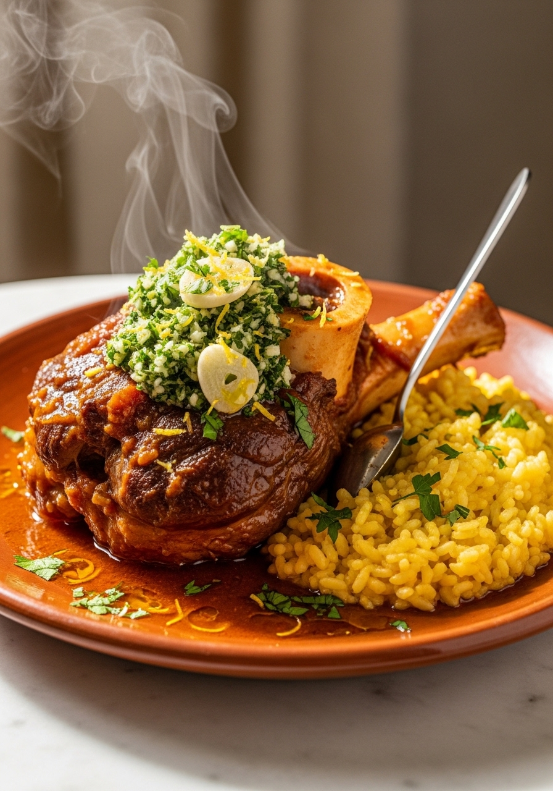
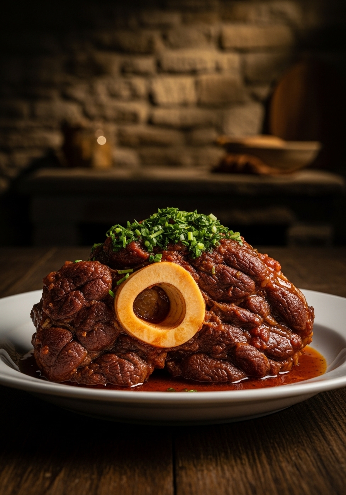

L'ossobuco alla milanese è uno dei piatti simbolo della cucina lombarda: stinchi di vitello tagliati trasversalmente, infarinati e rosolati, poi brasati lentamente per ore nel vino bianco e brodo fino a quando la carne cade dall'osso e il midollo si scioglie come burro. Il segreto è la gremolata — la miscela di scorza di limone, aglio e prezzemolo fresco che si aggiunge all'ultimo momento e trasforma un piatto ricco in qualcosa di brillante e vivo. Tradizionalmente servito con il risotto alla milanese allo zafferano, è il pranzo della domenica lombarda per eccellenza.

MilaneseLa gremolata — scorza di limone, aglio crudo e prezzemolo — è l'elemento che distingue l'ossobuco alla milanese da qualsiasi altro brasato italiano. Non va cotta: si aggiunge all'ultimissimo momento, sopra la carne calda, così che il calore sprigioni gli oli essenziali del limone e dell'aglio senza farli evaporare. Il contrasto tra la ricchezza del brasato e la freschezza brillante della gremolata è la firma del piatto. Alcune ricette tradizionali aggiungono anche acciughe nella gremolata (una variante più antica) per una nota umami profonda. Se la ometti, servi comunque dell'ossobuco buono, ma non l'ossobuco alla milanese originale.
Esiste un acceso dibattito tra i cuochi milanesi: l'ossobuco originale è 'in bianco' (senza pomodoro) o 'in rosso' (con pomodori)? La versione più antica è quella in bianco, con solo vino bianco, brodo e verdure. I pomodori pelati sono stati introdotti successivamente, probabilmente nell'Ottocento. Entrambe le versioni sono autentiche e diffuse. La versione in bianco è più delicata e lascia emergere il sapore puro del vitello; quella in rosso ha una salsa più corposa e saporita. La ricetta qui presentata usa i pomodori nella quantità tradizionale — pochissimi, solo per dare corpo alla salsa senza dominarla.
Ingredienti
Procedimento

L'ossobuco alla milanese è uno di quei piatti che migliora notevolmente il giorno dopo: il fondo di cottura si addensa, i sapori si amalgamano e la carne diventa ancora più tenera. Si conserva in frigorifero per 3-4 giorni in un contenitore ermetico. Per riscaldarlo: aggiungi un goccio di brodo e scalda a fuoco basso coperto per 10-15 minuti, oppure in forno a 160°C per 20 minuti. Prepara la gremolata fresca al momento di servire — non conservare quella avanzata. Il fondo di cottura è eccellente anche come condimento per la pasta o per insaporire il risotto.
L'ossobuco è il gambo (stinco) di vitello tagliato trasversalmente, in modo che ogni fetta includa l'osso con il midollo al centro. I tagli da 4-5cm di spessore sono ideali. Il midollo dell'osso che si scioglie durante la cottura è la parte più pregiata del piatto — si mangia con un cucchiaino, spalmato sul pane o sul risotto.
Sì, ma il risultato è diverso. Il manzo richiede tempi di cottura più lunghi (2-2,5 ore) e ha un sapore più intenso. Il vitello è più tradizionale perché ha la carne più tenera e il midollo più abbondante. Se usi il manzo, abbassa ulteriormente il fuoco e controlla che non si asciughi, aggiungendo brodo se necessario.
Tradizionalmente con il risotto alla milanese allo zafferano — il giallo del risotto e il marrone del brasato sono l'abbinamento iconico della cucina lombarda. In alternativa si serve con la polenta gialla, con purè di patate o, più semplicemente, con pane casereccio per raccogliere il fondo. Non si serve mai con la pasta.
Sì — riduci i tempi a 35-40 minuti ad alta pressione dopo la rosolatura e il soffritto. Lascia sfiatare naturalmente per 10 minuti. Il risultato è eccellente. Aggiungi la gremolata fresca al momento di servire. La pentola a pressione è ideale per rendere l'ossobuco un piatto infrasettimanale.
La causa è quasi sempre il calore troppo alto durante la brasatura. Il fuoco deve essere bassissimo — il liquido deve appena sobbollire, mai bollire vigorosamente. La bollitura forte indurisce le proteine della carne invece di sciogliere il collagene. Abbassa il fuoco e allunga i tempi di cottura: 30 minuti in più a fuoco basso fanno una differenza enorme.